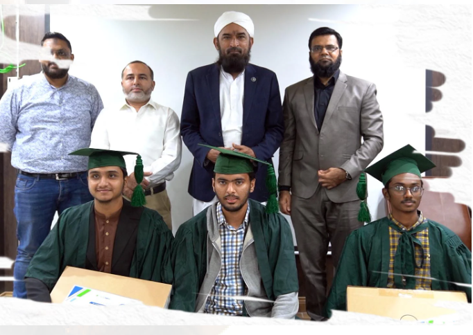

Services-Education-PIAIC
PIAC (Presidential Initiative for Artificial Intelligence and Computing) has been introduced by the President of Pakistan, Dr. Arif Alvi, which includes Saylani Welfare International Trust, Pakistan Stock Exchange and PanaCloud as partners. This program is especially launched for the youth of the country to specialize in I.T field. Courses in Artificial Intelligence, Cloud Computing, Block chain, Internet of Things, etc. are being conducted in this program. This program is being taught in almost every city of Pakistan. This program comes with online facility so that any student can stand on his or her own feet by avail this advanced technology at home.
